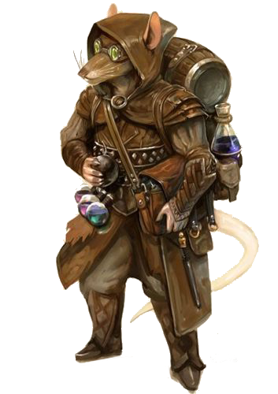
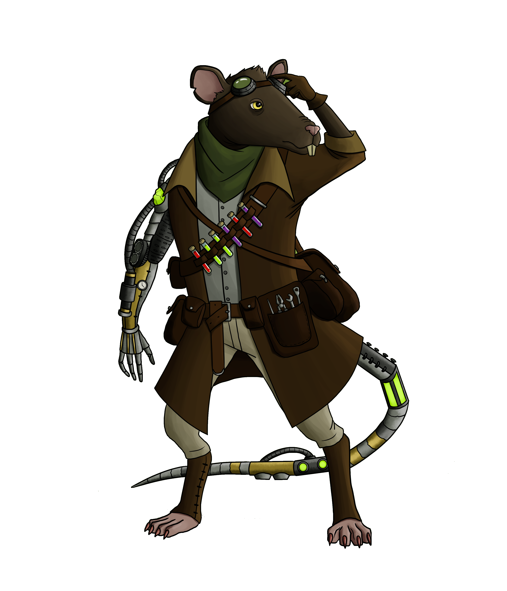
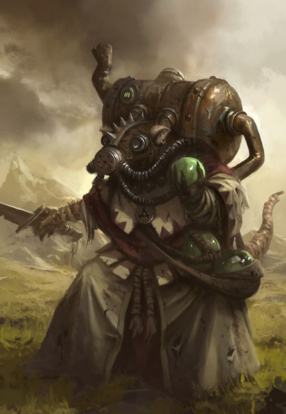

Ability Score Increase.
When determining your character's ability scores, increase one score by 2 and increase a different score by 1, or increase three different scores by 1. You can't raise any of your scores above 20.
Age.
Mahavren mature quickly, reaching adulthood at around 5-6 years old. They live somewhat shorter than humans do, dying at around 50 years old. However, due to their insatiable curiosity many die much earlier.
Alignment.
Most Mahavren tend towards Chaotic alignments as their culture leans heavily into experimentation and risk-taking.
Creature Type.
You are a Humanoid.
Size.
Your size is Medium. Mahavren tend to lie between 140 - 160 cm in length.
Speed.
Your walking speed is 30 feet, and you have a swimming speed equal to your walking speed.
Honed Senses.
Mahavren are naturally adept at finding things and navigating the world. You have advantage on any check relying on your sense of smell or navigation.
Information Seeker.
The desire for knowledge is reflected in the magical nature of Mahavren. At 3rd level you can cast
Borrowed Knowledge once per short rest without using a spell slot or material components, using your Intelligence as your spellcasting ability. If you have spell slots of the appropriate level or higher you may use them as well. You also gain proficiency in your choice of
Arcana, History, Nature or
Religion.
Poison Resistance.
Owed to your rodent ancestors you have resistance to poison damage and advantage on saves against the poisoned condition.
Languages.
You can speak and read Common and Mahavren. The Mahavren language uses the same script as the Goblin language, but when speaking it has a lot more squeaks, clicks and hisses.


